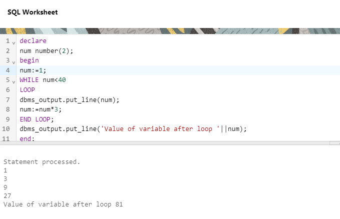

PL/SQL
PL/SQL is a block structured language. The programs of PL/SQL are logical blocks that can contain any number of nested sub-blocks. Pl/SQL stands for "Procedural Language extension of SQL" that is used in Oracle. PL/SQL is integrated with Oracle database (since version 7).
PL/SQL includes procedural language elements like conditions and loops. It allows declaration of constants and variables, procedures and functions, types and variable of those types and triggers. It can support Array and handle exceptions (runtime errors).
PL/SQL is not case sensitive so you are free to use lower case letters or upper case letters except within string and character literals.
The PL/SQL is known for its combination of data manipulating power of SQL with data processing power of procedural languages. It inherits the robustness, security, and portability of the Oracle Database.
Where to execute ?
To run and write PL/SQL Procedures you can use livesql by Oracle, visit livesql.oracle.com
Variables in PL/SQL
Variables store the values thta can change through the PL/SQL Block. Within the Execution section or Exception section, we may perform some operations on these variables leading to the change in their values.
Syntax :
vairable_name datatype [NOT NULL := value];
When a variable is specified as NOT NULL , we must intialize the variable when it is declared.
Example :
DECLARE
Marks number (6);
College varchar 2(10) NOT NULL:= "PGGC-11";
1. We can assign values to variables directly from the database comumns by using a SELECT INTO statement.
Syntax :
SELECT column_name INTO variable_name FROM table_name [ WHERE condition ];
Example :

Scope of Variables
P:/SQL allows the nesting of Blocks within Blocks i.e., the Execution section of an outer block can contain inner blocks. Therefore, a variable which is accessible to an outer Block is also accessible to all nested inner Blocks. The variables declared in the iner blocks are not accessible to outer blocks. Based on their declaration we can classify variables into two types.
- Local variables : Variables declared in a inner block cannot be referenced by outside Blocks. These cariables are known as Local Variables
- Global variables : Variable declared in a outer block can be referenced by its itself and by its inner blocks. These variables are known as Global variables.
Constants in PL/SQL
A constant is a value used in a PL/SQL block that remains unchanged throughout the program. It is a user-defined literal value. It can be declared and used instead of actual values.
constant_name CONSTANT datatype := VALUE;
Syntax :
DECLARE
-- constant declaration
pi constant number := 3.141592654;
-- other declarations
radius number(5,2);
dia number(5,2);
circumference number(7, 2);
area number (10, 2);
BEGIN
-- processing
radius := 9.5;
dia := radius * 2;
circumference := 2.0 * pi * radius;
area := pi * radius * radius;
-- output
dbms_output.put_line('Radius: ' || radius);
dbms_output.put_line('Diameter: ' || dia);
dbms_output.put_line('Circumference: ' || circumference);
dbms_output.put_line('Area: ' || area);
END;
Example :

Conditional and Iterative Statements in PL/SQL
PL/SQL supports programming language features like conditional statements, iterative statements in the similar way as other programming languages like Java and C++ .
Conditional Statement : IF THEN ELSE STATEMENT
First, we will study the syntax of how to use conditional statements in PL/SQL programming.
IF THEN ELSE STATEMENT
1. IF-ELSE
IF (condition)
THEN
--Statement 1;
--Statement 2;
.
.
ELSE
--Statement 1;
--Statement 2;
.
.
END IF;
Example :
2. IF-ELSEIF-ELSE
IF (condition)
THEN --Statement 1;
--Statement 2;
.
.
ELSIF (condition)
--Statement 1;
--Statement 2;
.
.
ELSE --Statement 1;
--Statement2;
.
. END IF;
Example :
ITERATIVE STATEMENTS
Iterative statements are used when we want to repeat the execution of one or more statements for specified number of times.
There are three types of loops in PL/SQL :
Simple Loop
A Simple Loop is used when a set of statements is to be execute at least once before the loop terminates. The important part her is 'at least once'. An EXIT condition must be specified in the loop, otherwise the loop will get into an infinite number of iterations. When the EXIT condition is satisfied the process exits from the loop. The conditioon is implied not on when these statements are to be executed but when we should stop executing these statements.
IMPORTANT POINTS ABOUT SIMPLE LOOPS :
- Initialize a variable before the loop body.
- Increment the variable in the loop .
- Use a EXIT WHEN statement to exit from teh loop. If you use a EXIT statement without WHEN condition, the statements in the loop are to be executed only once.
Example :
While Loop
A WHILE LOOP is used when a set of statements has to be executedas long as a condition is true.
The condition is evaluated at the beginning of each iteration. The iteration continues until the condition becomes false. This will exxecute the statements inside the loop only when and until when condition is true.
IMPORTANT POINTS ABOUT WHILE LOOPS :
- Initialize a variable before the loop body.
- Increment the variable in the loop .
- Use the variable value after the loop body.
A while loop is used when we know the terminating condition but are not aware how many times exactly we need to execute the statements.
Example :

FOR Loop
A FOR LOOP is used to execute a set of statements for a predetermined number of times.
Iteration occurs between the start ( val1 ) and end ( val2 ) integer values given. The counter is always incremented by 1. The loop exits when the counter reaches the value of the end integer.
IMPORTANT POINTS ABOUT FOR LOOPS :
- The counter variable is implicitly declared in the declaration section, so it's not necessary to declare it explicitly.
- The counter variable is incremented by 1 and does not need to be incremented explicitly.
Example :
PL/SQL Cursors
A Cursor is a temporary work area created in the system memory when a SQL statement is executed. This temporary work area is used to store the data retrieved from the database, and manipulate this data. A cursor can process only one row at a time, although it can hold multiple rows at one time.
The set of rows the cursor holds is called the active set.
There are basically two types of cursors in PL/SQL :
- IMPLICIT cursors
- EXPLICIT cursors
IMPLICIT CURSORS :
PL/SQL employs an implicit cursor for each UPDATE, DELETE, or INSERT statement we execute in a program. We cannot execute these statements within and explicit cursor, even if we want to. The only choice we have is between using an implicit or explicit cursor only when you execute a single-row SELECT statement ( a SELECT that returns only one row ).
In teh following UPDATE statement, which gives every student in the institute a+5 grace marks;
PL/SQL creates an implicit cursor to identify the set of rows in the table would be affected by the update :
UPDATE student SET marks=marks + 5 ;
Any single-row select query will also behave in the similar way:
SELECT sum(marks) FROM student ;
If we have a SELECT statement thta returns more than one row, we will have to use an explicit cursor for that query and then process the rows returned one at a time. PL/SQL does not yet support any kind of array interface between a databse table and a composite PL/SQL datatype such as a PL/SQL table.
Oracle provides few attributes called as implicit cursor attributes to check the status of DML operation. The cursor attributes are %FOUND, %NOTFOUND, %ROWCOUNT and %IS OPEN.
EXAMPLE :
EXPLICIT CURSORS
An Explicit cursor is a SELECT statement that is explicitly defined in the declaration section of your code and, in the process, assigned a name. There is no such thing as an explicit cursor for UPDATE, DELETE and INSERT statements.
With explicit cursors, you have complete control over how to access information in the database. You decide when to OPEN the cursor, when to FETCH records from the cursor ( and therefore from the table or tables in the SELECT statement of the cursor ) how many records to fetch, and when to CLOSE the cursor. Information about the current state of your cursor is available through examination of the cursor attributes. This granularity of control makes the explicit cursor an invaluable tool for your development effort.
An explicit cursor is defined in the declaration section of the PL/SQL Block. It is created on a SELECT statement which returns more than one row. We can provide a suitable name for the cursor.
Syntax to declare an explicit cursor
CURSOR cursor_name IS select_statement ;
Steps to use Explicit Cursors :
- 1. DECLARE : The cursor is declared with the variables and constants in the declaration section.
- 2. OPEN : This done in the Execution section.
- 3. FETCH : The data from cursor is fetches into PL/SQL variables, again ini the Execution section.
- 4. CLOSE : The last thing done with the cursor in the Execution section is to close it.
Syntax to access an explicit cursor
OPEN A CURSOR :
OPEN cursor_name ;
FETCH RECORDS FROM A CURSOR :
FETCH cursor_name INTO variable_name ;
CLOSE A CURSOR :
CLOSE cursor_name ;
The cursor attributes are %FOUND, %NOTFOUND, %ROWCOUNT and %IS OPEN.
Procedures in PL/SQL
Procedures in PL/SQL are similar to a procedure in othere programming languages. Every procedure has a header and a body. The header consists of the name of the procedure and the parameters or variables passed to the procedure. The body consists of declaration section, execution section and exception section similar to a general PL/SQL Block. A procedure is similar to an anonymous Pl/SQL Block but it is named for repeated usage.
Procedures don't normally return a value, but may have some outside effects ( like updating tables ). Procedures may return a value in the form of OUT parameter, described later in this section.
The general format of a procedure is :
CREATE [ OR REPLACE ] PROCEDURE procedure_name [ list of paramteres ]
IS
[ declaration_section ]
BEGIN
--Execution section
EXCEPTION
--Exeption section
END;
EXAMPLE :
We can pass parameters to procedures in three ways.
CREATE [ OR REPLACE ] PROCEDURE procedure_name ( param1 IN datatype, param2 IN datatype, ...)
CREATE [ OR REPLACE ] PROCEDURE procedure_name ( param_name OUT datatype, param_name OUT datatype, ...)
CREATE [ OR REPLACE ] PROCEDURE procedure_name ( param_name IN OUT datatype)
Functions in PL/SQL
A function is another named PL/SQL Block which is similar to a procedure. The major difference between the both being, a function must always return a value, but a procedure may or may not return a value.
SYNTAX :
CREATE [OR REPLACE] FUNCTION function_name [parameters]
RETURN return datatype;
IS
--declaration section
BEGIN
--Execution section;
Return return_variable;
EXCEPTION
--Exeption section;
Return return_variable;
END;
1. Return Type : The return datatype can be any of the oracle datatype like varchar, number, etc.
2. The execution and exception section both should return a value which is of the datatype defined in the header section.
HOW TO EXECUTE A PL/SQL FUNTION ?
SELECT function_name FROM dual ;
OR
dbms_output.put_line( function_name )
Triggers in PL/SQL
A trigger is a pl/sql block structure which is fired when a DML statments like Insert, Delete, Update is executed on a database table. A trigger, as teh name suggests, is tiggered automatically when an associated DML ( fro which the Trigger is defined ) is executed.
SYNTAX :
CREATE [OR REPLACE] TRIGGER trigger_name { BEFORE | AFTER | INSTEAD OF }{ INSERT [ OR ] | UPDATE [OR] | DELETE }
[ OF col_name ];
ON table_name [ FOR EACH ROW ] WHEN (condition)
BEGIN
--Statements
END;
EXAMPLE :
Types of Triggers :
- Row level Trigger : This trigger should be fired at each row on which the specified operation ( INSERT,UPDATE, DELETE) took place. Trigger should be fired for each individual row. For example, if an Update statement updated 4 different rows tehn trigger should be fired 4 times, once for each row.
- Statement level Trigger : This trigger is fired on the complete statement and not on the individual rows. Taking the same example : Even if an UPDATE statement modified 4 rows, the trigger will be fired once for the complete statement.